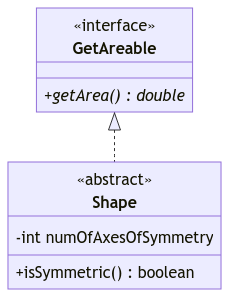
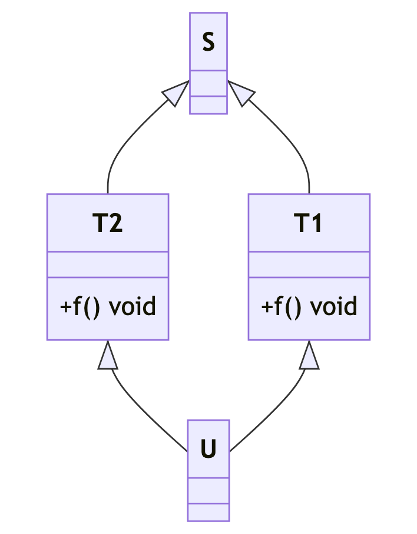
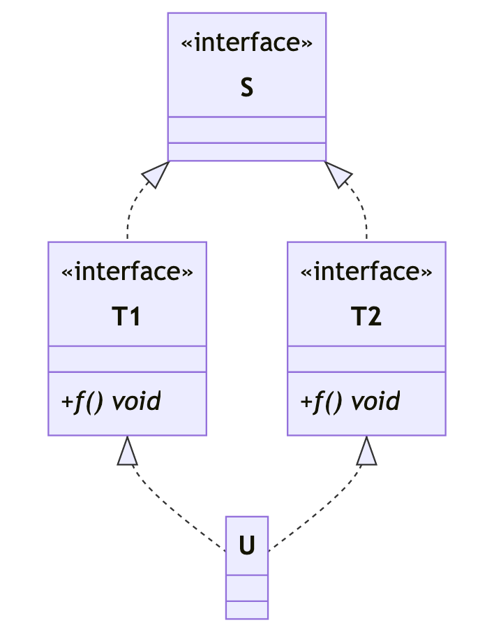
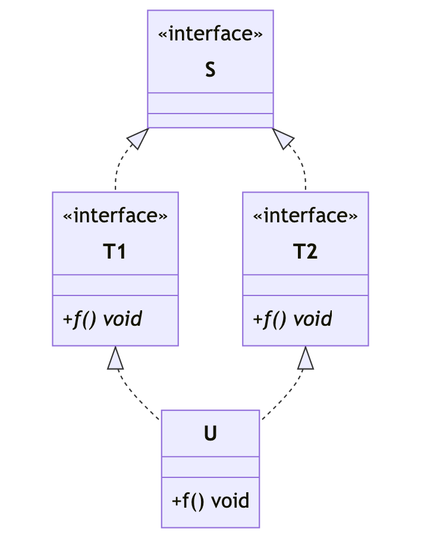

Unit 18: Interface
Learning Objectives
Students should
- understand interface as a type for modeling "can do" behavior.
- understand the subtype-supertype relationship between a class and its interfaces.
Modeling Behavior
We have seen how we can write our program using superclasses (including abstract ones) to make our code more general and flexible. In this unit, we will kick this up one more notch and try to write something even more general, through another abstraction.
Let's reexamine this method again:
1 2 3 4 5 6 7 8 9 10 11 | |
Note that all that is required for this method to work, is that the type of objects in array supports a getArea method. While Shape that we defined in the previous unit meets this requirement, it does not have to be. We could pass in an array of countries or an array of HDB flats. However, it is unnatural to model a Country or a Flat as a subclass of Shape (recall inheritance models the IS-A relationship so we cannot easily say that a country is a shape).
To resolve this, we will look at an abstraction that models what can an entity do, possibly across different class hierarchies.
Interface
The abstraction to do this is called an interface. An interface is also a type and is declared with the keyword interface.
Since an interface models what an entity can do, the name usually ends with the -able suffix1. Java Comparable is one such example. You may remember this from Lab 1 where Agent implements Comparable<Agent>. For now, we cannot fully explain what that is as we need to know about generics.
Now, suppose we want to create a type that supports thegetArea() method, be it a shape, a geographical region, or a real estate property. Let's call it GetAreable:
1 2 3 | |
All methods declared in an interface are public abstract by default. We could also just write:
1 2 3 | |
Now, for every class that we wish to be able to call getArea() on, we tell Java that the class implements that particular interface.
For instance,
1 2 3 4 5 6 7 | |
The Shape class will now have a public abstract double getArea() thanks to it implementing the GetAreable interface. Since Shape inherits the abstract GetAreable::getArea() method, it must be declared as an abstract class.
We can have a concrete class implementing an interface too.
1 2 3 4 5 6 7 8 9 10 11 12 | |
For a class to implement an interface and be concrete, it has to override all abstract methods from the interface and provide an implementation to each, just like the example above. Otherwise, the class becomes abstract.
With the GetAreable interface, we can now make our function findLargest even more general.
1 2 3 4 5 6 7 8 9 10 11 | |
Class and Interface Inheritance
- A class can only extend from one superclass, but it can implement multiple interfaces.
- An interface can extend from one or more other interfaces, but an interface cannot extend from another class.
Extra Information
The rule above may seem weird considering that Object is the root of the class hierarchy. Wouldn't Object be the supertype of all types? But Object is a class, so an interface cannot inherit from Object.
While it is true that interface cannot inherit from Object, we also have to remember that all run-time type will be a concrete class. Therefore, all run-time type will be a subtype of Object. So it follows that all type can be type casted into Object.
The problem is during type checking, how can we let the compiler knows that an interface has access to all the methods from the class Object without actually inheriting Object? The answer is by explicitly adding the method signature for the methods in Object when the interface has no supertype. So in a way, we have "inheritance" without explicitly making it inheritance.
Interface as Supertype
If a class \(C\) implements an interface \(I\), \(C <: I\). This definition implies that a type can have multiple supertypes.
In the example above, Flat <: GetAreable and Flat <: RealEstate.
Casting using an Interface
Like any type in Java, it is also possible to cast into an interface. Lets consider an interface I and two classes A and B. Note that A does not implement I
1 2 3 4 5 6 7 8 9 10 11 | |
Now lets, consider the following code excerpt:
1 2 | |
Note that even though A does not implement I, the Java compiler allows this code to compile. Contrast this with casting between classes which have no subtype relationship:
1 2 | |
How do we explain this? Well, the Java compiler will not let us cast, when it is provable that it won't work (e.g., casting between two classes which have no subtype relationship). However, for interfaces, there is the possibility that a subclass could implement the interface and therefore Java allows it to compile. Consider one such potential subclass AI:
1 2 3 | |
The lesson here is that when we are using typecasting, we are telling the compiler that we know best, and therefore it will not warn us or stop us from making bad decisions. It is important to always be sure when you use an explicit typecast. Still, the compiler being our friend may decide that we are provably wrong. But if the compiler cannot show that we are provably wrong in the case of type casting, it will allow us to compile and add a run-time check.
Impure Interfaces
As we mentioned at the beginning of this module, it is common for software requirements, and their design, to continuously evolve. But once we define an interface, it is difficult to change.
Suppose that, after we define that GetAreable interface, other developers in the team starts to write classes that implement this interface. One fine day, we realize that we need to add more methods into the getAreable. Perhaps we need methods getSqFt() and getSqMeter() in the interface. But, one cannot simply change the interface and add these abstract methods now. The other developers will have to change their classes to add the implementation of two methods, or else their code would not compile!
This is what happened to the Java language when they changed from version 7 to version 8. The language needed to add a bunch of useful methods to standard interfaces provided by the Java library, but doing so would break existing code in the 1990s that rely on these interfaces.
The solution that Java came up with is the allow an interface to provide a default implementation of methods that all implementation subclasses will inherit (unless they override). A method with default implementation is tagged with the default keyword. This leads to a less elegant situation where an interface has some abstract methods and some non-abstract default methods. In CS2030S, we refer to this as impure interfaces and it is a pain to explain since it breaks our clean distinction between a class and an interface. We prefer not to talk about it -- but it is there in Java 8 and up.
Example
The following example shows a potential use of impure interface.
1 2 3 4 5 6 7 8 9 10 11 12 | |
So now, if someone implements the Ordered interface, they only need to override one method called lessThan. Then, automatically, it has inherited the method greaterThan, greaterThanOrEqual, and lessThanEqual.
Class Diagram (Part 6)
Similar to abstract class, we denote interface with <<interface>>. Furthermore, since all (non default) methods in the interface are public abstract methods, it is best to show them as such. So, use + to indicate public method and put the name in italics to indicate that they are abstract methods.
Also note that if a class is implementing an interface, we connect them with dashed arrow. Without impure interface, it simplifies our search for a method implementation in the run-time step of dynamic binding. The method implementation can only be found by following the solid arrow because the dashed arrow leads to an interface. Since an interface cannot be a subtype of a class, it ensures that there is no method implementation across the dashed arrow.
1 2 3 4 5 6 7 8 9 10 11 12 13 | |

Multiple Inheritance
One of the problems that is solved by (pure) interface is the problem of multiple inheritance. Other languages such as Python allows for a class to inherit from multiple parents. This, however, poses a problem of ambiguity in the case of diamond inheritance. Consider the class diagram below.

Note that the class U has no method called f but it inherits it. Also note that the class diagram is not valid in Java. Now consider the following method invocation.
1 2 | |
Which method is invoked? Is it T1::f() or is it T2::f()? Maybe it's both? What if we call super.f()? Such problem is hard to solve and it boils down to the "convention" used in each programming languages. Python's convention is called Method Resolution Order or MRO. We will not go into details of this, but just note that it may cause counter-intuitive outcome.
If we are only considering pure interface in Java, then such problem cannot occur. To illustrate that, we will first consider the following class diagram.

At a glance, you may feel that the class diagram above exhibits all the problem of multiple inheritance. However, if you inspect it more closely, you will realize that such diagram cannot occur in Java because of the following contradiction.
Uis not an abstract class as it has no<<abstract>>annotation.Uimplements (and thus inherits) fromT1andT2.T1andT2has abstract methodf()that is inherited byU.- Since
Udoes not overridef(), the methodf()is still abstract inU. - Since
Uhas an abstract method, it is an abstract class. - However, (5) contradicts (1).
In fact, U should be an abstract class based on our reasoning. So up until now, there is actually no problem of multiple inheritance because we cannot instantiate U. to instantiate U, we must override f() in U by providing an implementation. This brings us to the following class diagram.

But now, there is no ambiguity! We have an implementation U::f(). Furthermore, we cannot instantiate T1, T2, or S. So the only implementation that will be executed if these are the only classes we have is the implementation U::f(). It does not matter if the method descriptor is first described in two different interface. At the end of the day, there is only one implementation in U.
Unfortunately, none of this nice property is ensured if we have impure interface. So, we will not talk about impure interface.
-
Although in recent Java releases, this is less common. ↩